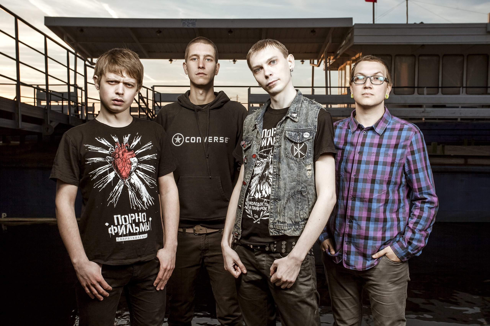
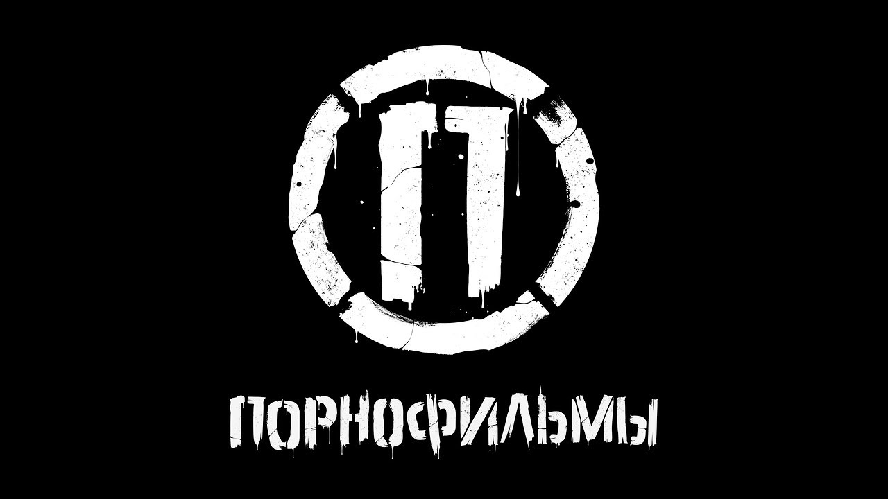

«Порнофильмы» — российская панк-рок-группа из города Дубна[2], основанная в 2008 году. В настоящее время в состав «Порнофильмов» входят вокалист и автор текстов Владимир Котляров, гитарист Игорь Рыбин, гитарист и менеджер группы Александр Русаков, барабанщик Кирилл Муравьёв и басист Александр Агафонов. Коллектив выделяется на фоне других российских панк-рок групп сильно политизированными текстами песен[3], а также пропагандой здорового образа жизни, все участники группы — вегетарианцы, не употребляют алкоголь, наркотики и не курят[4]. Группа «Порнофильмы» была популярна в Дубне в ранние годы выступлений, а после выпуска своего четвёртого альбома «В диапазоне между отчаянием и надеждой» и отмены ряда концертов по настоянию местных властей[5][6] получила большую известность и стала одним из ведущих исполнителей панка в России. В настоящее время у группы «Порнофильмы» насчитывается 13 релизов, включая 8 студийных альбомов и 5 мини-альбомов. Последний студийный альбом, «Это пройдёт», вышел в 2020 году.

Логотип Группы ПорноФильмы
Я так соскучился
Прости. Прощай. Привет
В диапазоне
Уроки любви
Я так боюсь
Доброе сердце
Россия для грустных
Выйди из комнаты
Ритуалы
Кто все эти люди?